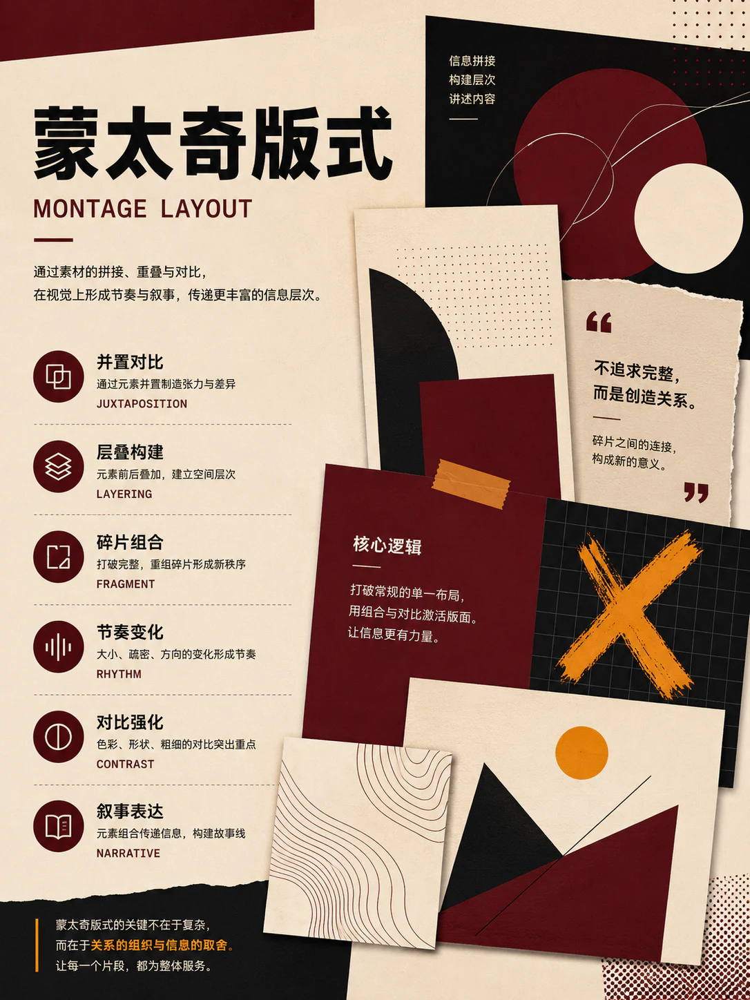

蒙太奇版式
MONTAGE LAYOUT
通过素材的拼接、重叠与对比，在视觉上形成节奏与叙事，传递更丰富的信息层次。
为什么一加一大于二
THE THIRD MEANING · COLLISION OVER ADDITION
不追求完整，而是创造关系。碎片之间的连接，构成新的意义。
—— 152 号原海报金句
如果你只需要把一张震撼的照片讲清楚，直接用140 图片主导版式让主体占满视野就够了。但很多复杂命题——比如「老街拆迁里的记忆与未来」「快节奏都市里的孤独与微光」——根本无法用一张完整的画面说完。
蒙太奇版式的本质不是「多放几张图」，而是借用电影剪辑的核心机制：把两个各自独立的片段贴近、交叠，迫使观众的大脑在接缝处自行做推理。片段 A 说的是字面意思，片段 B 说的是字面意思，两者撞在一起，却生出原本两张图里都不存在的「第三意义」。
它也不同于以图文替换猜字谜为核心的150 图文谜语版式：图文谜语追求唯一谜底的解码快感，而蒙太奇追求的是情绪、时间与隐喻的多层共振。
人物剪影始终是同一张中性轮廓，但并置碎片一换上热汤，观众就会自动替剪影补上渴望情绪。
蒙太奇的六条骨架
SIX STRUCTURAL LEVERS · ANATOMY OF THE POSTER
152 号原海报列出了构成蒙太奇的六条结构杠杆。很多初学者把它们当成「堆叠滤镜」，结果越堆越乱；点开任意一条徽章，看这六条规矩在版面里各自负责哪一层骨架。
并置对比
JUXTAPOSITION原海报原话：「通过元素并置制造张力与差异」
从剪辑室到印刷页
HISTORY & LINEAGE · 1915 TO 1929
法语动词 monter 本义是「装配、剪辑」。20 世纪初，电影剪辑室和平面印刷厂几乎同时发现了同一件事：打碎完整世界再重新拼接，能释放出单幅画面望尘莫及的思想冲击力。
和三位近邻版式怎么分清界限？
拼贴（Collage）偏重纸张、胶带、布料等物理材质的质感对撞与手工情绪板；蒙太奇（Montage）更重图像之间的逻辑关系、剪辑顺序与语义隐喻。
多面板把画面拆进界线分明的独立格子里平行展示；蒙太奇则刻意让碎片跨边界咬合叠压，用接缝消除格子的疏离感。
蒙德里安版式用严整的正交黑线把页面割成纯粹几何比例；蒙太奇打破正交栅格，靠异质素材的不对称交锋建立动势。
何时该用、何时别用
WHEN TO CUT & WHEN TO STOP
- 场景匹配
- 扫读感受
- 潜在风险
什么时候放心上蒙太奇
- 文化海报与专题封面：电影节、展览、音乐专辑、杂志特辑开篇，需要一眼抛出多重意象和情绪态度。
- 品牌故事与年度回顾：同时呈现产品细节、使用场景与理念宣言，用接缝讲清「从哪里来、到哪里去」。
- 观点鲜明的视觉评论：把反差强烈的两组事实直接并置，比写三段解释更有说服力。
什么时候坚决别用
- 工具界面、表格与价格对比：用户需要横纵对齐速查，斜切与叠层只会摧毁可比性。
- 安全导视、说明书与表单：高紧迫度场景里，零歧义比艺术张力重要得多；长篇深度精读也更适合141 文字主导版式。
- 想靠热闹撑满页面时：若满屏全是互不相关的促销标签与亮色轰炸，那就变成了高密度的147 马戏团版式，而非克制叙事的蒙太奇。
挑出成立的蒙太奇
DIAGNOSTIC QUIZ · SINGLE-VARIABLE CHECK
原海报与视觉密码
ORIGINAL POSTER · PALETTE & KEYWORDS

打破常规的单一布局，用组合与对比激活版面。让信息更有力量。
蒙太奇版式的关键不在于复杂，而在于关系的组织与信息的取舍。让每一个片段，都为整体服务。
逐像素取自 152 原海报的四色骨架
- 暖旧相纸底
#F2E1CB承托全局留白与透气感 - 暗房炭黑墨
#121110压稳前景结构与底部撕边 - 勃艮第深酒红
#551014中层情绪面与六要点圆徽 - 焦糖琥珀橘
#E28115唯一笔刷大 X、胶带与落日爆点